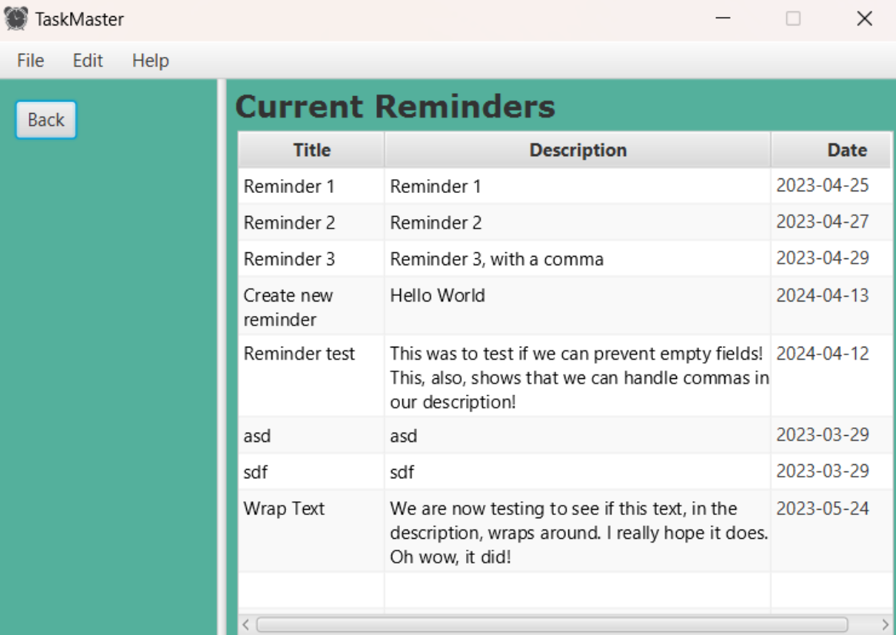

Projects
Throughout the years, I've worked on several projects. Listed are some of my highlights:
-
The website you're currently on! This is one of the biggest (on-going) projects I have so far.
This personal website will be updated frequently.
-
TaskMaster
was a productivity application that was made purely with Java and JavaFX. It allowed the user create to-do lists
and reminders through a simple GUI. I lead a group of 4 whilst utilizing agile methodology. More information can be found
through the project's website or
github repo.

-
Database Management Systems Project: This is a working CLI created with Java and JDBC that allowed users to be able
to interact with a MySQL database. Users would be able to update, add, or remove entries in the
exisiting database.